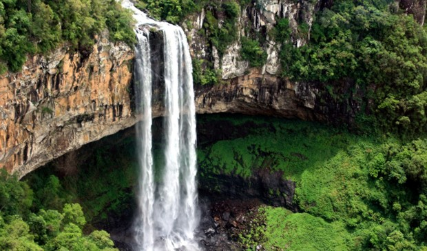
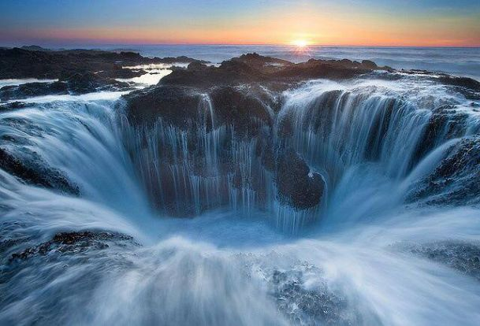
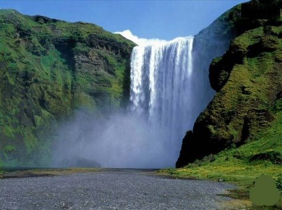
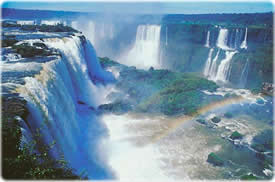

Umas ds cachoeira mais bonita
o há quem não tenha aprendido na escola que uma das funções mais importantes das árvores é ajudar a regular o gás carbônico na atmosfera. Mas um novo estudo realizado na Austrália questiona as estimativas sobre a quantidade de dióxido de carbono (CO2) que árvores poderiam retirar da atmosfera. Segundo cientistas da Universidade da Western Sydney University, árvores não conseguem armazenar tanto dióxido de carbono (CO2) quando se pensava. Os experimentos põem em dúvida a tese de que níveis crescentes de CO2 na atmosfera intensificariam o desenvolvimento (o chamado efeito de fertilização) das árvores - que se "alimentam" do carbono retirado do ar através da fotossíntese - aumentando assim a absorção do gás. O estudo foi publicado na revista científica "Nature Climate Change". Segundo os cientistas, a pesquisa também indica que, por este motivo, levantamentos internacionais sobre o armazenamento de gás carbônico nas florestas podem estar superestimados. Eles analisaram, por cinco anos, eucaliptos nos limites de Sydney que foram artificialmente bombardeados por altas doses de dióxido de carbono lançadas por tubos a 28 metros de altura. O objetivo do experimento era simular os níveis de CO2 na atmosfera previstos para 2050. A fotossíntese das árvores estudadas aumentou em 19% em três anos, mas – como elas crescem em uma região de solo pobre – a intensificação do processo não teve o impacto esperado no seu crescimento. Como resultado, mais gás passou a ser absorvido, porém este aumento também não foi significativo, segundo os cientistas, diante do intenso bombardeio de CO2 sofrido pelas plantas.
A catarata
se chama Chris Bertish, tem 42 anos e acabou de fazer história: cruzou sozinho o oceano Atlântico em uma prancha de stand-up paddle adaptada. O sul-africano completou a façanha nesta quinta-feira, após passar 93 dias em mar aberto, percorrendo 4,5 mil milhas náuticas (cerca de 7,5 mil quilômetros) com a ajuda de uma prancha e um remo. A viagem começou no dia 6 de dezembro do ano passado, quando Bertish deixou o porto de Agadir, no Marrocos. Sua localização foi monitorada via satélite durante toda a travessia, que incluiu uma passagem nas margens das Ilhas Canárias espanholas antes de entrar no Atlântico. Na manhã desta quinta-feira, Bertish avistou terra firme e desembarcou na Ilha de Antígua, do país caribenho Antígua e Barbuda. No trajeto, ele bateu um novo recorde: o de maior distância percorrida por uma pessoa sem ajuda em mar aberto - 71,96 milhas (cerca de 115 quilômetros).
A mais bela cachoeira
Os vegetais são distintos por causa de muitos fatores, um deles é proveniente da quantidade de água que determinadas plantas necessitam para sua manutenção. Nesse caso, existem três tipos distintos: as higrófilas, que se proliferam em ambientes com grande concentração de umidade; as hidrófilas, que representam o grupo de vegetais que é adaptado à água; e as xerófilas, que sobrevivem com a escassez de água. No caso das vegetações presentes no território brasileiro, é bom ressaltar que o fato de estudar as coberturas vegetais do Brasil não quer dizer que essas estão com seu aspecto natural, diante disso, o que é abordado é o estudo dos aspectos vegetativos originais, pois o espaço geográfico do país vem passando por uma série de transformações para atender aos interesses e às atividades humanas. O território brasileiro abriga uma variedade de coberturas vegetais proveniente de muitos fatores, entre os principais estão: a localização geográfica onde há uma elevada temperatura, além de possuir uma extensa área de aspecto continental, que também proporciona uma diversidade de fusos, climas, vegetações entre outros. Apesar da grande diversidade natural da flora presente no Brasil, atualmente existe somente 60% de áreas conservadas, isso para atender às atividades produtivas, como a produção agropecuária, o processo de urbanização e o extrativismo (vegetal, mineral e animal).
Linda catarata
A Floresta Amazônica corre o risco de cair em um círculo vicioso de seca e desmatamento provocado pela ação humana e pela redução das precipitações na região, segundo um estudo publicado nesta segunda-feira (13) na revista científ... - Veja mais em